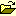
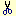
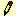
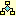
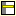

|
Guia do Ambiente - Barra de Ferramentas
|
Esta seção contém a
descrição da ação dos itens da barra de
ferramentas.
- Novo: inicia um novo projeto vazio.
-  Abrir: lê um projeto gravado
em um arquivo.
- Salvar: grava o projeto.
- Desfazer: reverte as
operações efetuadas mais recentemente.
- Refazer: repete as
operações efetuadas mais recentemente (atualmente,
não funcional).
-  Recortar: copia os dados
selecionados para a área de transferência e os exclui da
área de trabalho.
- Copiar: copia os dados selecionados
para a área de transferência.
- Colar: substitui os dados
selecionados pelo conteúdo armazenado na área de
transferência.
-  Modo de Edição:
pára a execução do programa e exibe o editor de
código.
-  Modo Fluxograma: monta o programa e
o exibe como um fluxograma.
-  Modo de Instruções Rotuladas:
monta o programa e o exibe como um conjunto de instruções
rotuladas (no formato de lista).
- Executar: simula o programa em
Norma, produzindo sua computação e indicando as
operações realizadas.
- Próximo Passo: executa apenas
uma instrução.
- Pausa: interrompe a
execução direta do programa.
- Parar: termina a
execução do programa e volta à
instruçãod e partida sem alterar o valor dos
registradores.
- Opções de
Execução: exibe a janela de
configuração de execução.
Desenvolvido por Marcelo Bona de
Mendonça Boff, Fernando Trebien e Leonardo Golob. Para mais
informações, consulte Créditos.